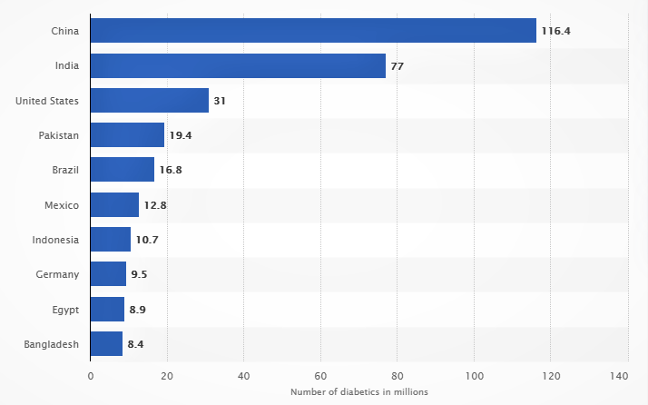

CHRONIC DISEASE is a disease that persists for a long time.
They generally cannot be prevented by vaccines or cured by medication, nor do they just disappear.
Health damaging behaviors particularly tobacco use, lack of physical activity, and poor eating habits - are major contributors to the leading chronic diseases.
The leading chronic diseases in developed countries include Cancer, Cardiovascular Disease and Diabetes.
CANCER
Involves abnormal cell growth with the potential to invade or spread to other parts of the body.
There are more than 100 types of cancer, including skin cancer, lung cancer and lymphoma. Symptoms vary depending on the type.
CAUSE:
Factors such as age, gender, race, local environmental factors, diet, and genetics are some of the leading causes for cancer.
EFFECTS:
Change in bowel or bladder habits, a sore throat that does not heal, unusual bleeding or discharge, Indigestion (usually chronic) or difficulty swallowing,
nagging cough or hoarseness are some effects of cancer.
CURE/TREATMENT:
Surgery, Chemotherapy, Radiation therapy, Bone marrow transplant, Cryoablation and Radiofrequency ablation.
STATISTICS:
Cancer is the 2nd leading cause of death globally, and is responsible for an estimated 9.6 million deaths in 2018. Globally, about 1 in 6 deaths is due to cancer.
Approximately 70% of deaths occur in low- and middle-income countries.
Around 1/3rd of deaths due to the 5 leading behavioral and dietary risks: high BMI, low fruit and vegetable intake, lack of physical activity, tobacco use, and alcohol use.
Tobacco use is the most important risk factor and is responsible for approximately 22% of cancer deaths.
The most common causes of cancer death are cancers of:
Lung (1.76 million deaths) Colorectal (862 000 deaths) Stomach (783 000 deaths) Liver (782 000 deaths) Breast (627 000 deaths).
WORLDWIDE COUNTRY RANKING
Australia
Newzealand
USA
PREVENTION MODULE
National Cancer Control Programme (NCCP) established by WHO offers the most rational means of achieving a substantial degree of cancer control, even where resources are severely limited, by identifying and implementing priorities for action and research.
A NCCP is a public health programme that, by implementing systematic, equitable and evidence-based strategies for prevention, early detection, diagnosis, treatment and palliation, will reduce the number of cancer cases and deaths and improve quality of life of cancer patients
DIABETES
Blood glucose is the main source of energy and comes from the food we eat.
Insulin, a hormone made by the pancreas, helps glucose from food get into your cells to be used for energy.
CAUSE:
Risk for diabetes increases when overweight, have a parent or sibling with the condition, not physically active, high blood pressure, high cholesterol, or high triglycerides.
Countrywise Diabetes cases in millions

EFFECTS:
Foot Ulcers
Cardiovascular Disease
Vision Impairment
Gum Disease
Fatigue
Stroke and Nerve Damage
CURE/TREATMENT:
Diabetes medication, Insulin, Artificial Pancreas, Herbal and natural therapies.
STATISTICS:
The number of people with diabetes has risen from 108 million in 1980 to 422 million in 2014.
The global prevalence of diabetes among adults over 18 years of age has risen from 4.7% in 1980 to 8.5% in 2014.
Diabetes prevalence has been rising more rapidly in middle- and low-income countries.
Diabetes is a major cause of blindness, kidney failure, heart attacks, stroke and lower limb amputation.
In 2016, an estimated 1.6 million deaths were directly caused by diabetes. Another 2.2 million deaths were attributable to high blood glucose in 2012.
Almost half of all deaths attributable to high blood glucose occur before the age of 70 years. WHO estimates that diabetes was the seventh leading cause of death in 2016.
PREVENTION MODULE
Aboriginal Diabetes Initiative (ADI) established in 1999 in had initial funding of $58 million over 5 years. It was then expanded in 2005 with a budget of $190 million over 5 years. Currently,
Health Canada is investing over $50 million per year
CARDIOVASCULAR
The 4 main types of CVDs are- Coronary Heart Disease, Stroke or TIA, Peripheral Arterial Disease and Aortic Disease.
CAUSE
Overweight
Lack of physical activity
Poor Nutrition
Smoking
Having a family history of CVD
EFFECTS:
Adults aged 45-64 are the most likely for pain or pressure in the chest, pain or discomfort in the arms, left shoulder, elbows, jaw, or back, shortness of breath, nausea and fatigue, lightheadedness or dizziness and cold sweats.
CURE/TREATMENT:
Medication, such as to reduce low density lipoprotein cholesterol, improve blood flow, or regulate heart rhythm and surgery.
STATISTICS:
CVDs are the number 1 cause of death globally: more people die annually from CVDs than from any other cause.
An estimated 17.9 million people died from CVDs in 2016, representing 31% of all global deaths. Of these deaths, 85% are due to heart attack and stroke.
Over three quarters of CVD deaths take place in low- and middle-income countries.
Out of the 17 million premature deaths (under the age of 70) due to noncommunicable diseases in 2015, 82% are in low- and middle-income countries, and 37% are caused by CVDs.
PREVENTION MODULE
“Global Hearts”, a new initiative from the World Health Organization (WHO) in and partners launched on the margins of the UN General Assembly in 2016, aims to beat back the global threat of cardiovascular disease, including heart attacks and strokes
- the world’s leading cause of death.